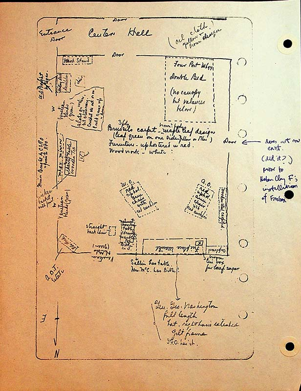

Center hallway at top of page with front of house facing to the left of pageDoorway to room from hallway on top left of paper. Exterior of house on left side of paper
{partial compass rose at bottom of page has north pointing down and east to the left}
Oil cloth- yellow and brown designinside center hallway, right side of paper
Wash Standinside doorway from central hall left side of paper
Four Post Mhgy [Mahogany] Double Bed (no canopy but valences below)inside doorway from center hall, on right side of paper
Writing desk, doors below and chairon exterior wall close to wash standon opposite side of wall is note crossed out with “X”: W.D[writing desk] bought by ?. Egan?
Notes centered in room
3 ply Brussels
Maple Leaf design (leaf green on one side yellow on other)
Furniture upholstered in red.
Woodwork- white
Venetian blinds (green) slats on incline but stationary. Couldn’t see out or in. Could raise up or downfirst window from top
Mhgy mirror, & cherry table wooden top. Mirror bought by CSRO & given to KFO; wicker basket with ???? center exterior wall between windows. Note about ownership of table/mirror outisde wall on left side.
8 da. Clock, AOT Estatebottom left corner of image
Straight back chair, walnut wooden table, 1 drawer, marble topnear bottom of drawing on left sidewith arrow drawn to:Sallie has table, Mrs. McC has bible
Fireplace manteltext upside down near at bottom of room, Brown tin box for loaf sugar.
Gen Geo Washington, full length, hat right hand extended, gilt frame. ?.F.O has it.outisde room near bottom of page
Does not now exist. (did it?) prior to Helen Clay F's instalation of fireboxat right of page, arrow poinitng to door, written in blue ink.